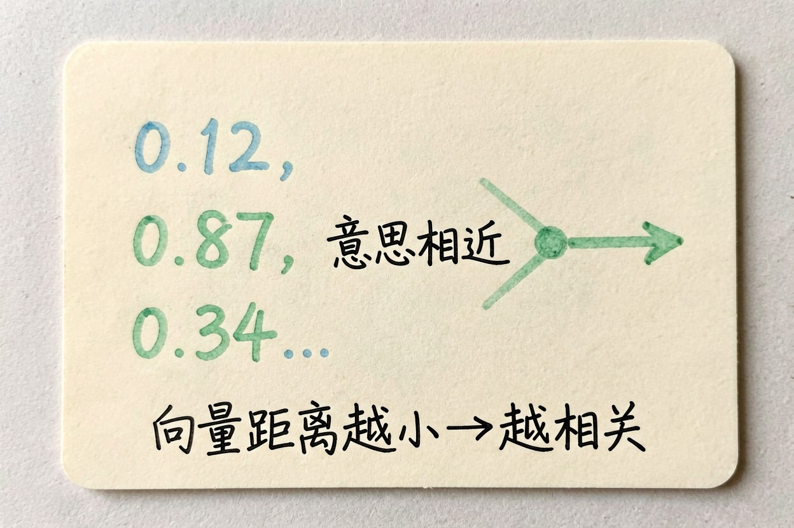
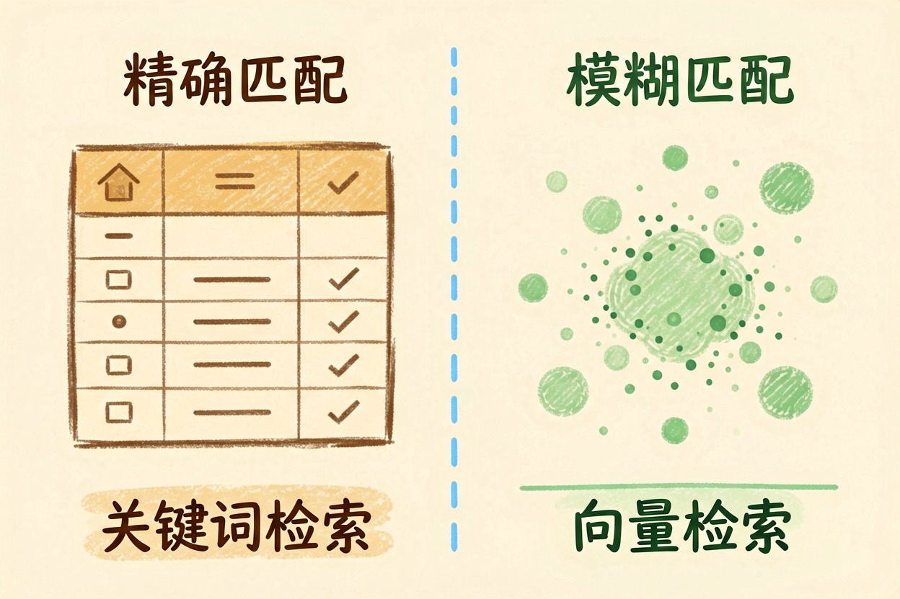
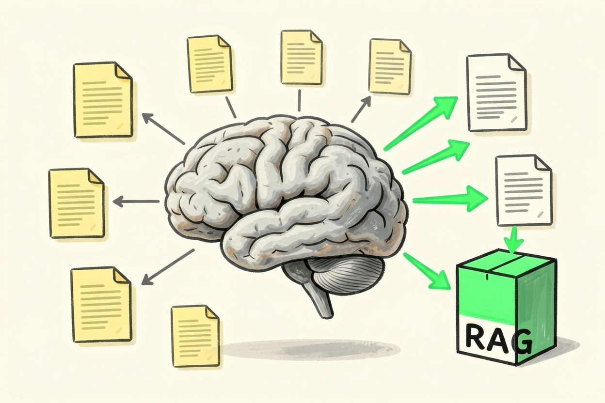
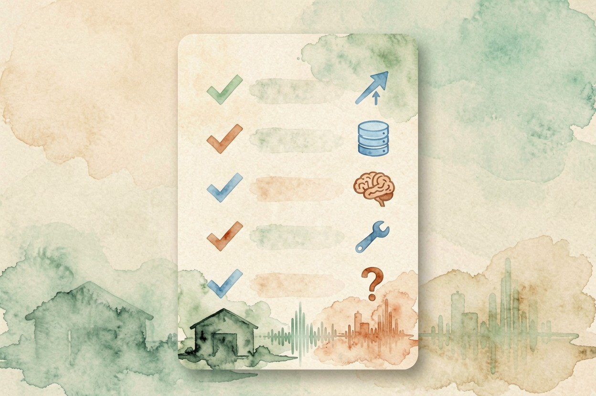

向量数据库是什么：AI 的记忆仓库 — Learntide
普通数据库按「字面」去找，向量数据库按「意思」来找，这正是它能喂饱大模型的关键。
向量数据库是什么：存的是意思

向量数据库是什么？一句话，它把一段文字、一张图或一段音频，转成一长串数字，这串数字叫向量。意思相近的内容，数字也彼此靠近。检索时不比字面，比的是这串数字在空间里的距离。
举个例子。你搜「水果公司」，普通搜索大概率一无所获。向量库却能把讲苹果、讲 iPhone 的段落捞出来，因为在数字空间里，它们离得很近。
它和普通数据库差在哪

普通数据库擅长精确匹配。你查订单号，它一条不差地给你。你查「苹果」，只找带这两个字的行。规则清楚，结果可复现。
向量库擅长模糊匹配。你问得再绕，只要意思对得上，它就能捞到相关段落。代价是结果没有绝对的对错，只有相似度高低。
关键词检索：输入「苹果」 → 命中含「苹果」二字的记录
向量检索： 输入「水果公司」→ 命中讲苹果、讲 iPhone 的段落还有个直观差别。普通数据库能告诉你「找到 3 条」，向量库返回的永远是「最像的前 5 条」。哪怕库里没有对得上的内容，它也会给你 5 条。这点容易让人误判。
两者并不冲突。真实系统里常常一起上：先用关键词圈定范围，再用向量排序，准确率往往比单用一种更高。
为什么大模型离不开它

模型的训练数据里没有你公司的合同，也没有你去年的会议纪要。你直接问，它只能编。这类边界，可以对照 大模型是什么 一起看。
把这些文档切成小段，逐段转成向量存进库里。用户提问时，先拿问题去库里捞出最相关的几段，再连同问题一起交给模型作答。这整套流程，就是 RAG 是什么 的骨架，向量库负责其中管记忆的那一半。
这也是为什么很多产品能「读」你上传的文件。文件没进模型的脑子，只进了一个库，用时现查。模型能读懂捞回来的段落，靠的是 涌现是什么 那类能力。
还有个好处常被忽略：资料更新只要重新入库，不用重训模型。两者成本差好几个量级。
常见用法和踩坑点
企业知识库问答、个人笔记检索、客服调历史工单、代码库搜索，都是常见去处。
坑也集中在几处。切段太长，捞回来的内容夹着大量噪声。切段太短，上下文断裂，模型看不懂。资料过期或前后打架，检索再准也没用，模型会照着错的说。最容易翻车的一点：入库和检索用的向量模型必须是同一个，换了就对不上。
选型上不用一上来就上重型方案。数据量小时，一个轻量库甚至一个本地文件就够用。等规模真涨起来，再换也不迟。
别以为模型什么都知道
一个接了向量库的助手看起来很懂你，其实它只是查得快。库里没有的东西，它照样答不上来，或者干脆猜一个给你。
所以别把它当成无所不知的专家，也别把资料一股脑倒进去了事。它能不能答准你的私活，关键看向量数据库是什么、以及你喂进去的那批资料干不干净、新不新。

本文信息核对于 2026-08-08。AI 产品的价格、免费额度与功能变动频繁，实际以各工具官网当前说明为准。